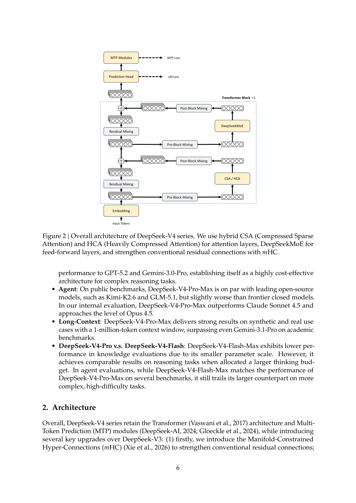
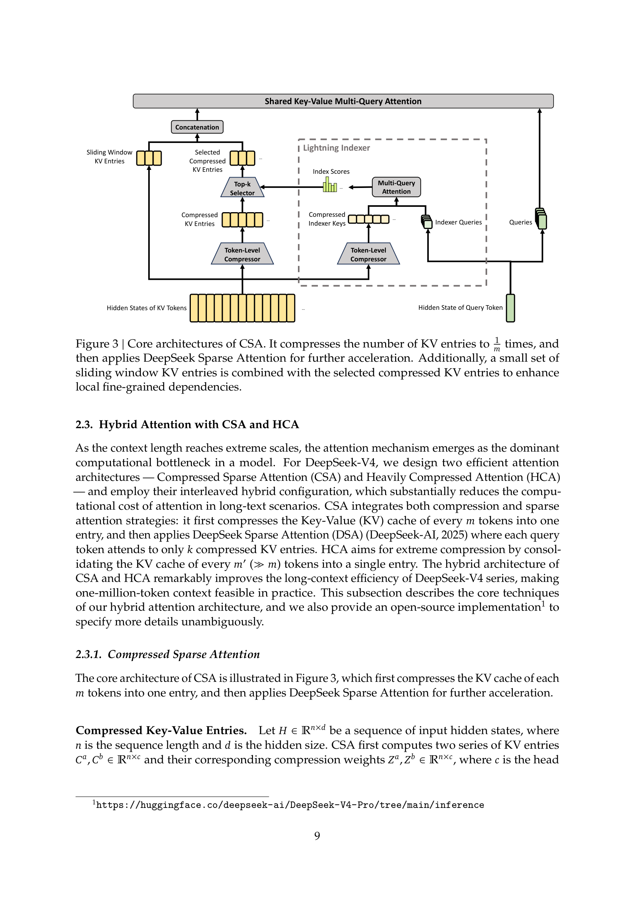
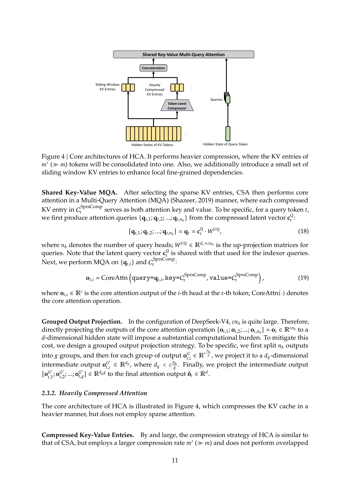
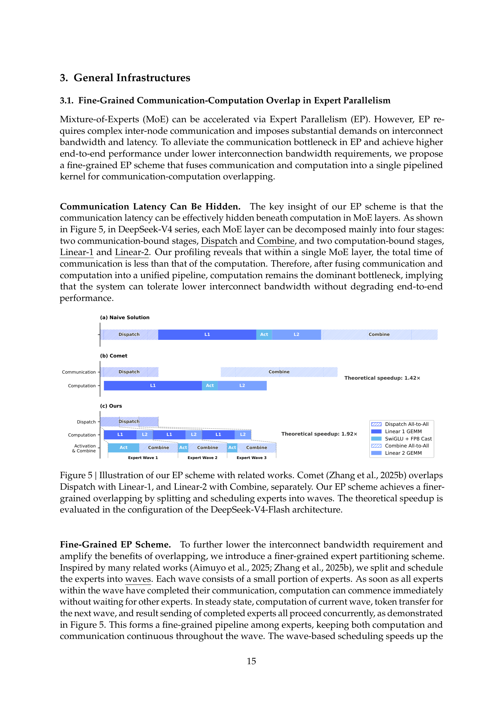
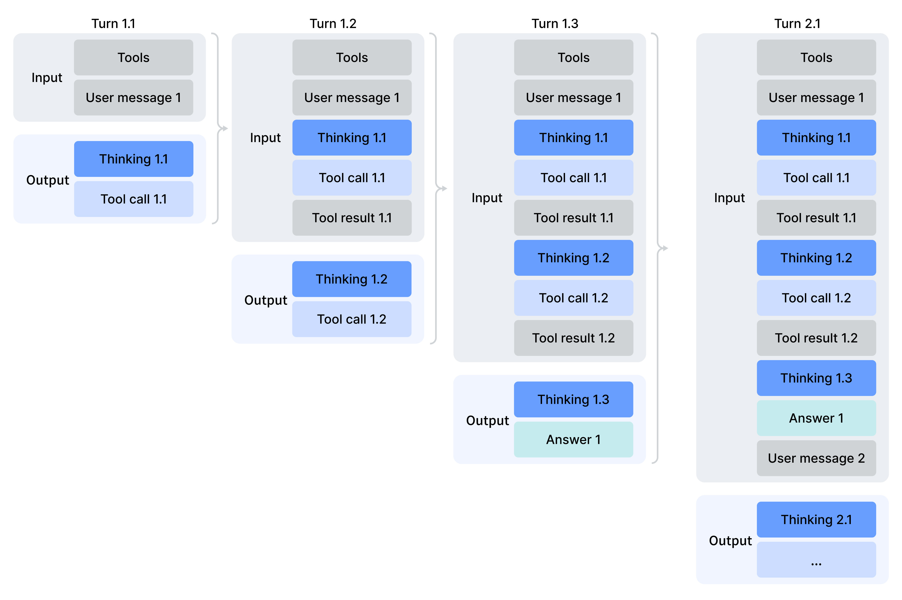
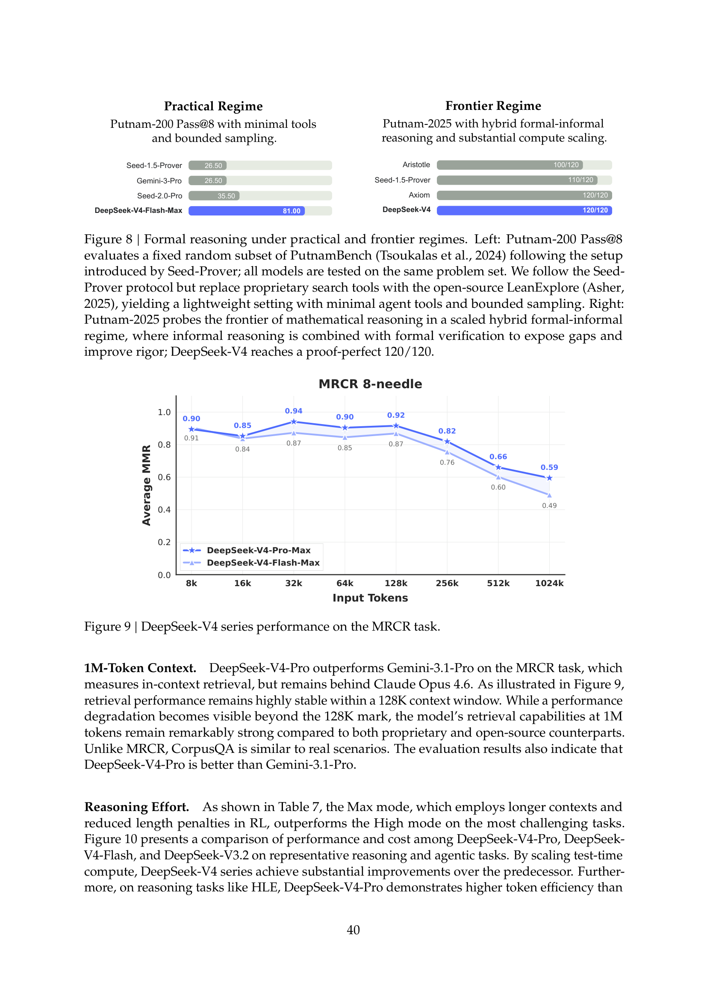
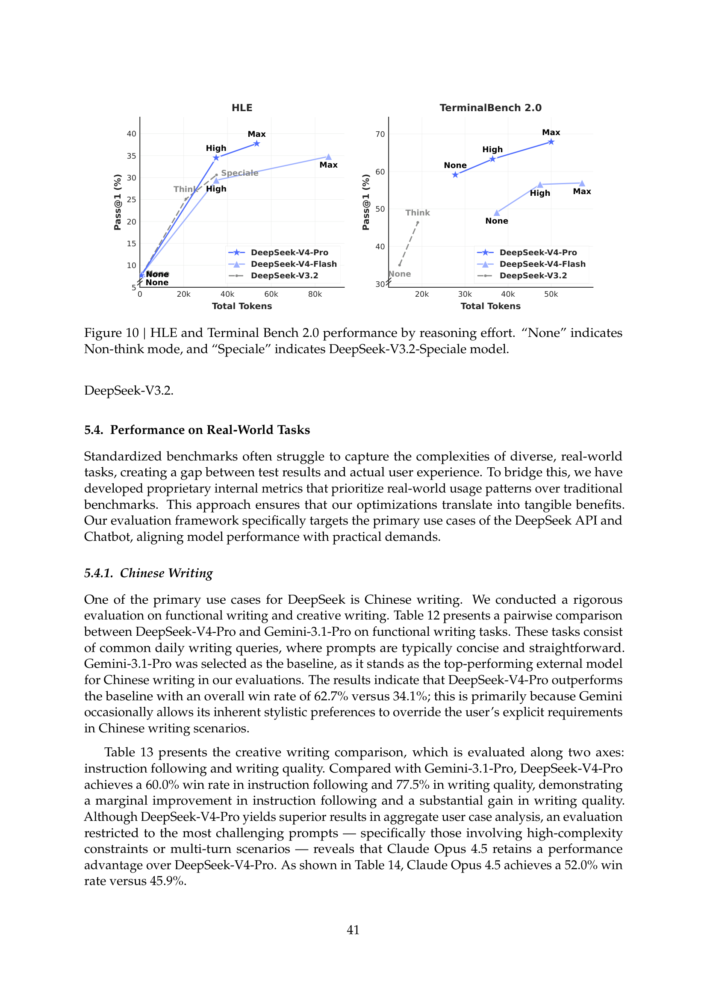

DeepSeek-V4: Towards Highly Efficient Million-Token Context Intelligence
摘要与核心卖点
DeepSeek-V4 系列是 DeepSeek-AI 在 2026-04-24 发布的 MoE 语言模型 preview 版本,包含两档:DeepSeek-V4-Pro(1.6T 总参 / 49B 激活)与 DeepSeek-V4-Flash(284B 总参 / 13B 激活),两者都原生支持 1M token 上下文。
整篇报告的核心论点只有一个:推理模型与长程 agent 工作流都撞上了 vanilla attention 的二次方墙,要突破只能从架构层动刀。V4 给出的答案是三件事捆绑:(1)混合注意力 CSA + HCA、(2)Manifold-Constrained Hyper-Connections(mHC) 替代朴素残差、(3)Muon 优化器 替代 AdamW(除少数模块外)。
核心效率数字(1M-token 场景,相对 DeepSeek-V3.2)
| 指标 | V4-Pro | V4-Flash | 对比基线(BF16 GQA8) |
|---|---|---|---|
| single-token inference FLOPs(vs V3.2) | 27% | 10% | — |
| accumulated KV cache(vs V3.2) | 10% | 7% | — |
| accumulated KV cache(vs BF16 GQA8) | ≈ 2% 在 1M 设置 | 100% | |
| 预训练 tokens | 33T | 32T | — |
1. 动机:撞上二次方注意力的墙
作者把 2026 年的 LLM 研究绑在两个趋势上:推理模型 test-time scaling 与 long-horizon agent 工作流——两者都对模型处理超长上下文提出刚性需求。而 vanilla attention 的 O(n²) 复杂度让这条路在 1M 量级直接失效。报告没有把叙事包装成"三个挑战",而是直接给出三项正交架构创新,每一项对准一个不同的瓶颈:
| 创新 | 解决什么问题 | 具体做法 |
|---|---|---|
| ① Hybrid Attention(CSA + HCA) | 二次方 attention 在长上下文成本爆炸,vanilla softmax 无法承受 1M | 两种互补压缩:CSA 把 KV 沿序列压缩到 1/m,再做 DeepSeek Sparse Attention(DSA) 稀疏选 top-k;HCA 用更激进的比例 m' ≫ m 压缩但保持 dense attention。两者 interleaved 部署。 |
| ② Manifold-Constrained Hyper-Connections(mHC) | 朴素 HC(Zhu et al 2025)堆层就训不稳定,但残差带宽不够会影响表达力 | 把 HC 的 residual mapping 矩阵 B_l 约束在 doubly stochastic matrices 流形(Birkhoff polytope),保证 spectral norm ≤ 1 → non-expansive。通过 Sinkhorn-Knopp 迭代投影。 |
| ③ Muon Optimizer(+ Hybrid Newton-Schulz) | AdamW 收敛慢、MoE 长训练不稳 | 对除 embedding / prediction head / mHC 权重 / RMSNorm 之外的大多数模块使用 Muon(Jordan et al 2024, Liu et al 2025)。Newton-Schulz 10 步:前 8 步快速收敛系数,后 2 步稳定系数。 |
这三项共同作用,使 1M-token context 从理论可能变成工程可部署。预训练 token 总量:Pro 33T,Flash 32T。
2. 架构:三项核心创新
2.1 从 V3 继承 · 调整的细节
V4 保留了 V3 的两大骨架:DeepSeekMoE FFN(细粒度 routed expert + shared expert)与 Multi-Token Prediction(MTP)。但做了四处细节调整,每一处都值得注意:
- MoE 亲和度函数从
Sigmoid(·)改为Sqrt(Softplus(·))——细节未说明动机,但与后续 auxiliary-loss-free balancing 搭配 - 保留 auxiliary-loss-free 负载均衡,但额外加一个极轻微的 sequence-wise balance loss(权重 0.0001)防止单序列内极端不平衡
- 取消 V3 对 routing target node 数量的约束,重新设计并行策略
- 前几层 MoE 改用 Hash routing(Roller et al 2021)——根据输入 token ID 的哈希函数静态决定专家,替代 dense FFN,作用是稳定早期层的路由

2.2 mHC · 流形约束的超连接
Hyper-Connections(Zhu et al 2025)把残差流的宽度从 ℝ^d 扩展到 ℝ^{n_hc × d},引入三个线性映射 A_l、B_l、C_l 决定残差更新:
这套扩展残差带宽的方案理论上能提升表达力,但 堆层之后数值不稳定——这是 V4 作者明确观察到的。mHC 的核心贡献是把 B_l 投影到双随机矩阵流形(Birkhoff polytope):
这个约束的意义是:
- 谱范数 ‖B_l‖₂ ≤ 1 → 残差变换是 non-expansive,不会放大梯度,前向/反向都稳
- ℳ 在矩阵乘法下封闭 → 深堆叠时稳定性保留
- A_l、C_l 通过 Sigmoid 约束为非负有界,避免信号相消
投影到 ℳ 的实现用 Sinkhorn-Knopp 算法——先 exp 保证正值,再交替做行/列归一化:
收敛到 t_max = 20 步(论文实测的实用取值),最终得到 B_l = M^(t_max)。
2.3 Hybrid Attention · CSA + HCA
V4 用两种互补的压缩注意力,在不同的 Transformer 层交替出现。这一节有两张图,分别刻画两种机制。
CSA(Compressed Sparse Attention)

-
Token-Level Compressor:压缩 KV 到 1/m
从 n × d 的 hidden state 计算两组 KV 与压缩权重 C^a, C^b, Z^a, Z^b ∈ ℝ^{n×c}(公式 9, 10)。然后每 m 个原始 KV 用可学习的位置 bias B^a, B^b 组合:
$$[S^a_{mi:m(i+1)-1};\ S^b_{m(i-1):mi-1}] = \text{Softmax}_{\text{row}}([Z^a_{mi:m(i+1)-1} + B^a;\ Z^b_{m(i-1):mi-1} + B^b]) \tag{11}$$ $$C_i^{\text{Comp}} = \sum_{j=mi}^{m(i+1)-1} S^a_j \odot C^a_j + \sum_{j=m(i-1)}^{mi-1} S^b_j \odot C^b_j \tag{12}$$ 注意 C^a 和 C^b 在相邻压缩块之间是重叠的——这是为了让压缩 entry 跨边界时不会丢信息。 -
Lightning Indexer:FP4 精度选 top-k
用 low-rank 方式生成 indexer query(公式 13-14),然后 index score:
$$I_{t,s} = \sum_{h=1}^{n_h^I} w_{t,h}^I \cdot \text{ReLU}\!\left(\mathbf{q}_{t,h}^I \cdot K_s^{\text{IComp}}\right) \tag{16}$$
关键工程细节:indexer 的 QK 路径全程跑 FP4 MXFP4 量化(§3.4),在 top-k 选择器环节取得 2× 加速,同时保持 99.7% 的 KV entry 召回率。 - Shared Key-Value MQA + Grouped Output Projection 对 top-k 选中的压缩 KV 做 Multi-Query Attention(公式 18-19)。由于 c·n_h 维度大,输出通过分组投影(g 组,d_g < c·n_h/g)压到 d 维,避免 projection 层的计算负担。
- Sliding Window Branch 为了捕捉 fine-grained 局部依赖,每个 query token 额外关注最近 n_win(=128)个未压缩的 KV entry,与 top-k 压缩 entry 拼接做 attention。
HCA(Heavily Compressed Attention)

HCA 的 compressor 简化版(单路 KV,无 overlap,公式 22-23),其余沿用 CSA 的 shared KV MQA + grouped output projection 策略。
CSA vs HCA 粒度对比
| 维度 | CSA | HCA |
|---|---|---|
| 压缩比 | 1/m(m = 4) | 1/m'(m' = 128,≫ m) |
| 压缩块 overlap | 有(C^a, C^b 互相重叠) | 无 |
| Attention 模式 | 稀疏(top-k via Lightning Indexer) | Dense |
| FP4 精度范围 | Indexer QK 路径 | 无 FP4 |
| 适合的层级 | 需要 fine-grained 检索的中间层 | 需要 coarse 全局整合的层 |
论文还给出若干工程细节:Partial RoPE(只对最后 64 维应用,query 用 +i、output 用 -i 的反向位置)、Attention Sink(OpenAI 2025,加可学习 sink logit z'_h 到 softmax 分母,公式 27)、BF16/FP8 混合存储(RoPE 维度 BF16,其余 FP8,节省 ~½ KV 缓存)。
2.4 Muon Optimizer
Muon(Jordan et al 2024,Liu et al 2025)是 V4 的主要优化器——除 embedding / prediction head / mHC 模块 / 所有 RMSNorm 之外都用 Muon,其余仍保留 AdamW(β₁ = 0.9, β₂ = 0.95, ε = 1e-20, weight_decay = 0.1)。
关键实现是 Hybrid Newton-Schulz 迭代做矩阵正交化——总共 10 步,分两阶段:
- 前 8 步:(a, b, c) = (3.4445, −4.7750, 2.0315)——高系数,快速把奇异值推近 1
- 后 2 步:(a, b, c) = (2, −1.5, 0.5)——低系数,精确收敛到 1 不过冲
为什么不用传统 QK-Clip?作者的答案很干脆:RMSNorm 直接加在 attention queries 和 KV entries 上(§2.3.3)已经防止了 attention logit 爆炸,所以 QK-Clip 被省略。
3. 基础设施
3.1 Fine-Grained Expert-Parallelism 重叠
MoE 的最大性能瓶颈是 Expert Parallelism 的 all-to-all 通信。V4 提出一套更激进的 comm-compute 重叠方案:

关键 insight:单个 MoE 层的通信时间小于计算时间——所以把通信完全藏在计算之下是可能的。V4 把专家切分成 wave,每个 wave 只包含一小部分专家:只要当前 wave 的通信完成,下一 wave 的计算立即开始,三个阶段(dispatch / compute / combine)在稳态下持续并发。
论文给出一个硬件设计建议公式:通信能被计算完全隐藏当且仅当 C/B ≤ V_comp/V_comm。对 V4-Pro(每 token-expert 对需 6hd FLOPs 与 3h bytes 通信),简化为:
即每 GBps 带宽可以藏住 6.1 TFLOP/s 的计算——超过这个带宽的额外投入就是浪费。论文把开源 CUDA mega-kernel 命名 MegaMoE,作为 DeepGEMM 组件发布,在 NVIDIA GPU 与华为 Ascend NPU 上实测 1.50–1.73× 加速,高延迟敏感场景(RL rollout、高速 agent serving)最高 1.96×。
3.2 TileLang · 批量不变 · FP4 QAT
另外三项工程同样关键,但我只抓 crux:
- TileLang DSL(Wang et al 2026):把精细 attention 变体从数百个 Torch ATen 算子收敛到一套融合 kernel。两个亮点——(1)Host Codegen 把 Python 侧每 invocation 的验证开销从几十/几百 μs 压到 <1 μs;(2)集成 Z3 SMT solver 做形式化整数分析,支持向量化、屏障插入、代码简化等优化 pass。
- 批量不变 + 确定性 kernel:训练/推理 bitwise 一致。attention decoding 用 dual-kernel 策略——主 kernel 单 SM 处理全序列,second kernel 用多 SM 处理最后 wave 弥补延迟,两者对齐累加顺序做到 bit-identical。矩阵乘法抛弃 cuBLAS 与 split-k,改用 DeepGEMM。
- FP4 QAT:用 MXFP4 量化两处——(1) MoE 专家权重(GPU 显存大头),(2) CSA Lightning Indexer 的 QK 路径。FP4→FP8 dequantize 是 lossless 的——因为 FP8(E4M3)比 FP4(E2M1)多两个 exponent bit,只要 FP8 128×128 block 内的 FP4 1×32 subblock 最大/最小 scale 比小于某阈值,fine-grained scale 能被 FP8 的 dynamic range 完全吸收。这使得整个 QAT pipeline 能无缝复用 FP8 训练框架。
4. Pre-Training
4.1 Flash vs Pro 配置
| 配置项 | DeepSeek-V4-Flash | DeepSeek-V4-Pro |
|---|---|---|
| Transformer layers | 43 | 61 |
| Hidden dimension d | 4096 | 7168 |
| 前 2 层 attention | 纯 SWA(sliding window only) | 纯 HCA |
| CSA: m / top-k / indexer head c^I | 4 / 512 / 128(64 head) | 4 / 1024 / 128(64 head) |
| HCA: m' / c | 128 / 512 | 128 / 512 |
| Query heads n_h / query compression d_c | 64 / 1024 | 128 / 1536 |
| Output projection groups g / d_g | 8 / 1024 | 16 / 1024 |
| SWA window n_win | 128 | 128 |
| MoE: shared / routed experts, intermediate | 1 + 256,int 2048 | 1 + 384,int 3072 |
| Activated experts per token | 6 | 6 |
| Hash routing layers | 前 3 层 MoE | 前 3 层 MoE |
| MTP depth / mHC n_hc / Sinkhorn-Knopp t_max | 1 / 4 / 20 | 1 / 4 / 20 |
| 总参 / 激活参 | 284B / 13B | 1.6T / 49B |
| 训练 tokens / batch size / peak LR | 32T / 75.5M / 2.7e-4 | 33T / 94.4M / 2.0e-4 |
| 序列长度 warmup | 4K → 16K → 64K → 1M(两档均同) | |
| 稀疏注意力引入时机 | 前 1T tokens 用 dense,然后 64K 起引入 sparse | |
4.2 训练稳定性 · Anticipatory Routing
作者坦率承认:trillion-parameter MoE 训练会遇到 loss spike,经验上发现这些 spike 与 MoE 路由选择出现 outlier 紧密相关。两个实用技巧:
Anticipatory Routing(预见式路由)
- 解耦 backbone 与 routing 的同步更新 Step t 的 feature 计算用当前参数 θ_t,但 routing indices 用历史参数 θ_{t-Δt} 计算。这打破了"当前 bad routing 反馈到当前 gradient 再强化同一个 bad pattern"的恶性循环。
- Anticipatory 的工程实现 朴素做法需要每步加载两份参数。V4 的优化是:在 step t-Δt 时提前计算并缓存 routing indices,到 step t 时直接消费。额外 wall-clock 开销控制在 ~20%。
- 自动启用机制 训练时默认不开——用一个自动检测机制监听 loss spike,spike 出现时立刻短暂 rollback 并激活 Anticipatory Routing,稳定一段时间后恢复 standard training。loss spike 避免 + 几乎零整体训练开销。
SwiGLU Clamping
SwiGLU 的线性分量限制在 [−10, 10],gate 分量上界 10。一行代码级的修改,经验上显著抑制 outlier——不损性能。
4.3 Base 模型评估(Table 1)
统一内部评估框架下,V4-Flash-Base(13B 激活)vs V3.2-Base(37B 激活)vs V4-Pro-Base(49B 激活):
| 类别 | Benchmark | V3.2-Base (37B) | V4-Flash-Base (13B) | V4-Pro-Base (49B) |
|---|---|---|---|---|
| World Knowledge | MMLU-Pro | 65.5 | 68.3 | 73.5 |
| Simple-QA verified | 28.3 | 30.1 | 55.2 | |
| FACTS Parametric | 27.1 | 33.9 | 62.6 | |
| Language & Reasoning | BBH | 87.6 | 86.9 | 87.5 |
| Code & Math | HumanEval Pass@1 | 62.8 | 69.5 | 76.8 |
| MATH | 60.5 | 57.4 | 64.5 | |
| Long Context | LongBench-V2 | 40.2 | 44.7 | 51.5 |
两个关键观察:
- V4-Flash-Base 用 13B 激活胜过 V3.2-Base 37B 激活 在大多数任务上——这是对新架构 + 新数据 pipeline 价值的直接验证。
- V4-Pro-Base 几乎全线领先,最大跳跃在 FACTS Parametric(+35.5pp)和 Simple-QA verified(+26.9pp)——这些是知识密集型任务,验证了 33T 预训练 token 的知识注入效果。
5. Post-Training
5.1 Pipeline:Specialist → OPD
V4 的 post-training 相比 V3.2 有一个关键替换:mixed RL stage 整个被 On-Policy Distillation(OPD)替代。两阶段流程:
Stage 1: Specialist Training (每个领域独立:SFT → GRPO RL) Stage 2: Unified OPD Merging (Student 学 10+ 个 Specialist Teacher 的 distribution)
领域覆盖数学、coding、agent、instruction following 等。GRPO 超参与 DeepSeek-R1 / V3.2 对齐。
Generative Reward Model(GRM)
易验证任务用规则验证器,难验证任务不走传统 RLHF 的 scalar reward model 路线——V4 的做法是:用 rubric-guided RL data,让 actor network 本身充当 GRM,对 GRM 直接做 RL 优化。结果:(1)模型的推理能力被"注入"到评估过程;(2)只需极少量多样化人工标注即可工作;(3)避免了维护单独 RM 的工程负担。
5.2 三档 Reasoning Effort · Thinking Management
| Reasoning Mode | 特点 | 典型场景 | Response format |
|---|---|---|---|
| Non-think | 基于直觉/习惯的快速响应 | 日常例行任务、紧急反应、低风险决策 | </think> summary |
| Think High | 有意识的逻辑分析,慢但更准 | 复杂问题求解、规划、中等风险决策 | <think>…</think> summary |
| Think Max | 推理到极限,慢但最强 | 探索推理能力边界 | 注入系统提示 + <think>…</think> summary |
Think Max 的系统提示原文 "Reasoning Effort: Absolute maximum with no shortcuts permitted. You MUST be very thorough in your thinking and comprehensively decompose the problem…"——明确要求显式写出中间每一步与被拒绝的假设。

Tool-Call Schema(新)
V4 用一个新的 XML-based tool-call 格式,以 <|DSML|> 特殊 token 划分——论文指出这显著降低了 escape 失败与 tool-call 错误率,相比旧的 JSON 格式更 robust。
Quick Instruction
Chatbot 场景里常有"是否该触发网页搜索"、"识别用户意图"这类辅助判断。传统做法要跑一个独立小模型,每次需要重新 prefill。V4 的 Quick Instruction 把这些辅助任务打包成特殊 token(<|action|>、<|query|>、<|authority|>、<|domain|>、<|extracted_url|>、<|read_url|>、<|title|>),复用已算好的 KV cache 直接产出——零额外 prefill,显著降低 TTFT。
5.3 On-Policy Distillation 公式推导
给定 N 个专家模型 {π_{E_1}, …, π_{E_N}},OPD 的目标是训练一个统一的 Student π_θ:
关键细节:
- Reverse KL 而非 forward KL → 样本从 Student 自己采样(on-policy),避免 exposure bias
- w_i 代表专家重要度,根据当前 task 动态设定(math 任务给 math expert 高权重,coding 给 coding expert 高权重)
- 全词表 logit 蒸馏,而不是 prior work 常用的 token-level KL 估计——后者把 KL 近似为
sg[log(π_{E_i}/π_θ)]作为 per-token advantage 塞进 RL 框架,梯度估计方差太高,导致训练不稳。V4 坚持完整 logit 分布,即使这带来更高工程成本
5.4 DSec · 容错 rollout 基础设施
为支持 agent 训练的多样化工作负载,V4 自建了 DeepSeek Elastic Compute(DSec)——一套 3 Rust 组件(Apiserver / Edge / Watcher)基于 3FS 分布式文件系统运行的生产级沙箱平台,单集群管理"数十万并发 sandbox 实例"。四种执行基板统一在 libdsec Python SDK 下:
- Function Call:无状态调用分派到预热容器池,零冷启动
- Container:Docker 兼容,EROFS 按需加载镜像
- microVM:Firecracker 驱动,VM 级隔离,适合高密度安全敏感部署
- fullVM:QEMU 驱动,支持任意 guest OS
另外一个必须指出的 RL 工程亮点:token-granular Write-Ahead Log(WAL)。每生成一个 token 立刻 append 到 WAL。抢占时保存 KV cache,恢复时从 WAL + KV cache 继续 decode。
6. Evaluation
6.1 标准 Benchmarks(Table 6)
DS-V4-Pro-Max(Think Max 模式)vs 当前 frontier 闭源/开源 6 家:
| Benchmark(metric) | Opus-4.6 Max | GPT-5.4 xHigh | Gemini-3.1-Pro High | K2.6 Thinking | GLM-5.1 Thinking | DS-V4-Pro Max |
|---|---|---|---|---|---|---|
| MMLU-Pro | 89.1 | 87.5 | 91.0 | 87.1 | 86.0 | 87.5 |
| SimpleQA-Verified | 46.2 | 45.3 | 75.6 | 36.9 | 38.1 | 57.9 |
| Chinese-SimpleQA | 76.4 | 76.8 | 85.9 | 75.9 | 75.0 | 84.4 |
| GPQA Diamond | 91.3 | 93.0 | 94.3 | 90.5 | 86.2 | 90.1 |
| HLE | 40.0 | 39.8 | 44.4 | 36.4 | 34.7 | 37.7 |
| LiveCodeBench | 88.8 | — | 91.7 | 89.6 | — | 93.5 |
| Codeforces(Rating) | — | 3168 | 3052 | — | — | 3206 |
| HMMT 2026 Feb | 96.2 | 97.7 | 94.7 | 92.7 | 89.4 | 95.2 |
| IMOAnswerBench | 75.3 | 91.4 | 81.0 | 86.0 | 83.8 | 89.8 |
| Apex Shortlist | 85.9 | 78.1 | 89.1 | 75.5 | 72.4 | 90.2 |
| MRCR 1M | 92.9 | — | 76.3 | — | — | 83.5 |
| CorpusQA 1M | 71.7 | — | 53.8 | — | — | 62.0 |
| SWE Verified | 80.8 | — | 80.6 | 80.2 | — | 80.6 |
| Terminal Bench 2.0 | 65.4 | 75.1 | 68.5 | 66.7 | 63.5 | 67.9 |
| BrowseComp | 83.7 | 82.7 | 85.9 | 83.2 | 79.3 | 83.4 |
结论快览:
- V4-Pro 在 LiveCodeBench(93.5)、Codeforces(3206)、Apex Shortlist(90.2)三项拿到全场第一——代码竞赛是首次开源模型追平 frontier 闭源
- Codeforces Rating 3206 在人类选手排位里约等于第 23 名
- Knowledge 任务整体仍落后 Gemini-3.1-Pro(MMLU-Pro -3.5pp、HLE -6.7pp、GPQA Diamond -4.2pp)
- SWE Verified 三家打平在 80.2–80.8 区间,V4-Pro 80.6 齐肩 Gemini / K2.6
- MRCR 1M 超 Gemini(83.5 vs 76.3),但 Opus 4.6 的 92.9 仍领先
6.2 长上下文 + 形式化数学


6.3 Real-World 任务
中文写作(vs Gemini-3.1-Pro)
| 任务 | V4-Pro 胜率 | Gemini-3.1-Pro 胜率 |
|---|---|---|
| 功能写作 overall | 62.7% | 34.1% |
| 创作写作 instruction following | 60.0% | 40.0% |
| 创作写作 writing quality | 77.5% | 22.5% |
| 高难度子集(vs Claude Opus 4.5) | 45.9% | 52.0%(Opus) |
结论:日常中文写作全面压过 Gemini-3.1-Pro(Gemini 常让自身风格偏好凌驾用户显式要求),但在最难的子集上仍不敌 Claude Opus 4.5。
White-Collar 任务(vs Opus-4.6-Max,30 个中文专业任务 × 13 行业)
| 任务 | V4-Pro Win | Tie | Opus-4.6 Win |
|---|---|---|---|
| Analysis | 55% | 8% | 37% |
| Generation | 52% | 10% | 38% |
| Editing | 47% | 18% | 35% |
| Overall | 53% | 10% | 37% |
详细维度分数:Task Completion(V4 98.32 vs Opus 96.68)、Content Quality(83.32 vs 78.00)、Formatting Aesthetics(76.98 vs 72.68)V4 胜;但 Instruction Following(V4 87.76 vs Opus 88.68)Opus 微幅领先——论文明确承认 V4 在严格格式约束上偶有疏漏。
Code Agent(vs Claude 全家,200 个真实内部 R&D 任务)
| Model | Pass Rate |
|---|---|
| Haiku 4.5 | 13% |
| Sonnet 4.5 | 47% |
| DeepSeek-V4-Pro-Max | 67% |
| Opus 4.5 | 70% |
| Opus 4.5 Thinking | 73% |
| Opus 4.6 Thinking | 80% |
V4-Pro 坐落在 Sonnet 4.5 与 Opus 4.5 之间,逼近 Opus 4.5 但落后 Opus 4.6 Thinking 13pp。对 85 位 DeepSeek 内部开发者的调查:52% 已把 V4-Pro 作为默认 coding 模型,39% 倾向于是,<9% 说不。
7. Conclusion 与局限
DeepSeek-V4 preview 版的三层价值:
- 架构层:混合 CSA + HCA + mHC + Muon 把 1M 上下文从"理论可能"变成"工程可部署",重新定义长上下文 LLM 的效率基线
- 基础设施层:Fine-Grained EP Overlap + TileLang + 批量不变 kernel + FP4 QAT + DSec 沙箱,构成支撑 trillion-MoE + 1M-context + agentic RL 的完整工业栈
- 训练层:Anticipatory Routing(spike 缓解)+ Specialist → OPD 两阶段 post-training(多 teacher full-vocabulary KL 蒸馏)+ GRM(actor 本身作 reward model)
- Preview 版本——不是最终发布,训练未完,架构保留了许多"preliminarily validated components",总体设计相对复杂
- Anticipatory Routing 与 SwiGLU Clamping 底层原理未充分理解,是实证有效的经验技巧
- 推理能力 仍落后 GPT-5.4 / Gemini-3.1-Pro 约 3-6 个月轨迹(HLE、GPQA、HMMT 等任务上)
- Knowledge 任务上 明显落后 Gemini-3.1-Pro(SimpleQA -17.7pp、MMLU-Pro -3.5pp)
- Long-context 上 Claude Opus 4.6 仍领先(MRCR 1M 92.9 vs V4-Pro 83.5)
- White-Collar 上 Instruction Following 略输 Opus 4.6
- Code Agent 上落后 Opus 4.6 Thinking 13pp(67% vs 80%)
- 内部开发者反馈"偶有低级错误、对模糊 prompt 偶有误解、偶尔过度思考"
Future directions(作者明确列出):精简架构到最核心设计 + 深入训练稳定性的基础原理 + 更激进的 sparsity(sparse embedding modules,Cheng et al 2026)+ 低延迟架构 + 长程 multi-round agentic + 多模态扩展。
最后一个观察:这份报告与传统"自吹自擂"的 tech report 风格不同——效率数字(27% FLOPs / 10% KV)是用来说清楚 V4 系列的定位是把长上下文变成可负担,而不是声称综合最强。作者把自己描述为"逼近 frontier 闭源模型 3–6 个月的开源 SOTA",这种位置感很清醒。